Many people struggle to understand computer hardware specifications when they buy or upgrade a system. Technical jargon and the way parts depend on each other get in the way of an informed decision.
Anatomy of a Computer is an interactive web experience that explains how the core parts of a computer work together, mainly through visuals: progressive disclosure, motion, and clear explanations of the CPU, GPU, RAM, storage and the rest.
Goals
Educate Demystify specs
Engage Animation, discovery
Empower Decide on understanding
Audience
First-time PC builders
Students of computer architecture
Shoppers comparing specs
User needs
Clarity
Context: how parts work together
Control: explore at their own pace
Visual learning
02
Research
Where people go today to learn about PC parts, and what each leaves out.
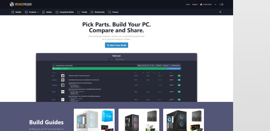
01 PCPartPicker
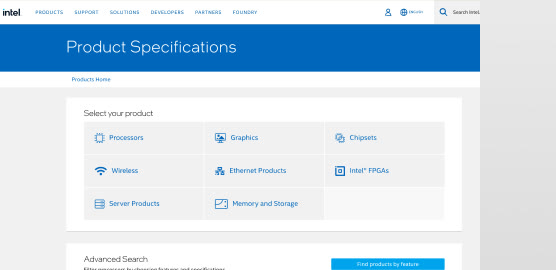
02 Intel ARK
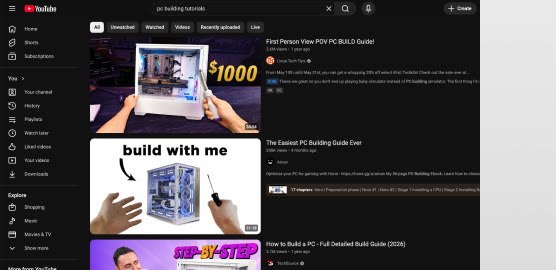
03 YouTube tutorials
PCPartPicker
Strong at compatibility checking and price comparison. Little educational content; it assumes prior knowledge.
Intel ARK
A detailed specification database, behind a technical interface with no visual explanations.
YouTube tutorials
Visual demonstrations with personality, but quality is inconsistent and nothing is interactive.
Micro-interactions
Small, focused animations that give feedback and guide attention: hover states on part callouts.
Progressive disclosure
Information revealed in layers to prevent overload: expandable detail panels and tooltips.
Animation practices
Ease-out curves that feel like physical objects, and every animation carrying meaning, not decoration.
03
Sitemap & Content Flow
Four ways in: explore the parts, see how power, data and air flow through them, get ready to build, or look something up. Parts can be explored in any order, with chevrons for a linear path and a menu for direct access.
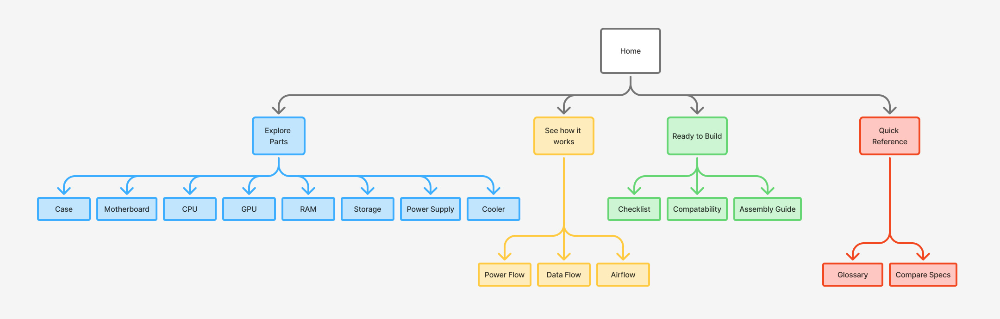
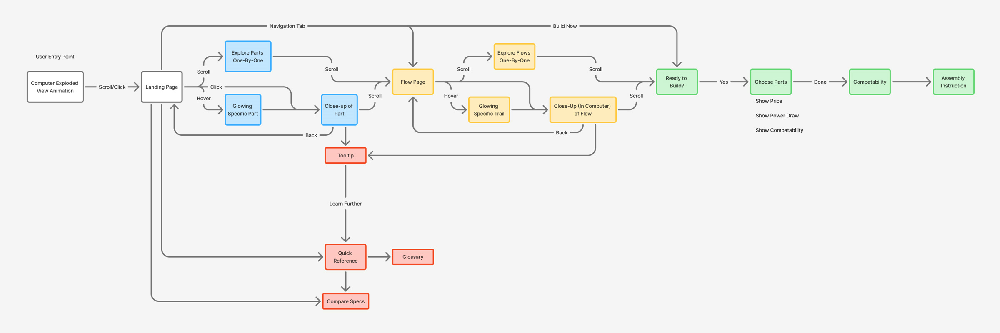
04
Wireframes
The landing page and a part page, each built around an interactive 3D model you can spin, with the navigation condensed until you hover.
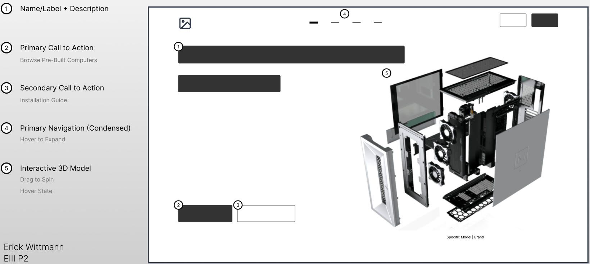
01 Landing page
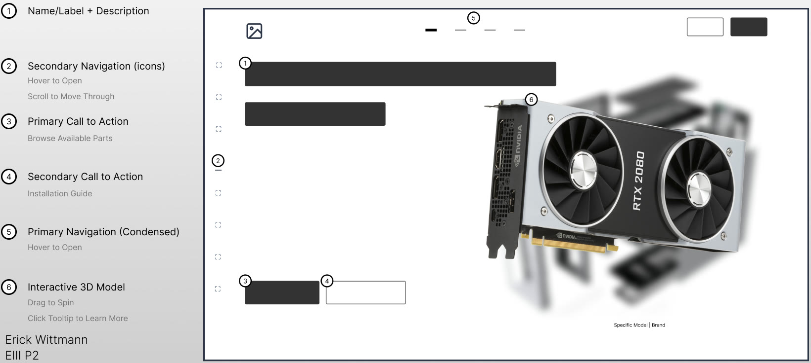
02 Part page
05
Visual Direction
Two boards pulled in opposite directions: precise, clean product pages, and a technical “computer console”, asking what the computer would see as its parts talk to each other.
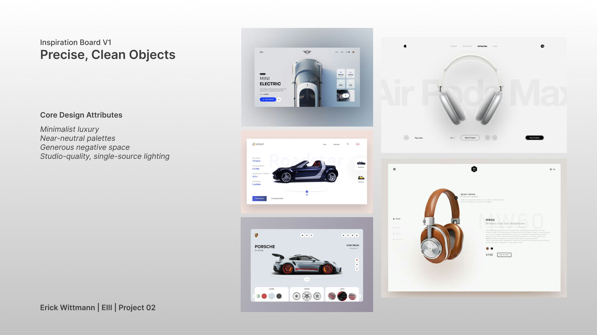
V1 Precise, clean objects
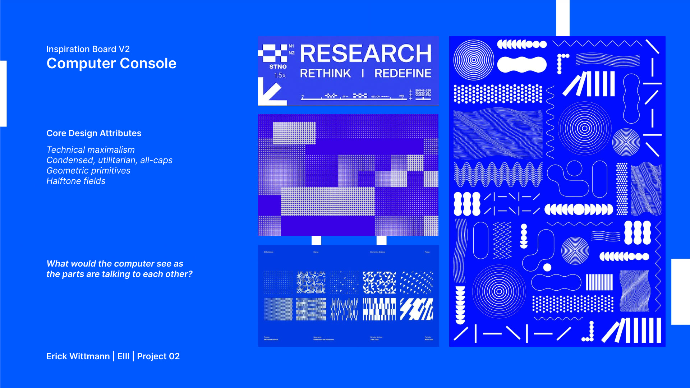
V2 Computer console
Premium & precise
Clean edges, consistent spacing, a professional finish.
Tech-forward
Dark themes, subtle glows, modern sans-serif.
Informative motion
Animation guides attention and reveals hierarchy.
Progressive complexity
Start simple, reveal depth through interaction.
06
Four Concepts
Each round was critiqued and the next one answered it. AI tools played a small part along the way, helping restyle part renders into the blueprint hologram look.
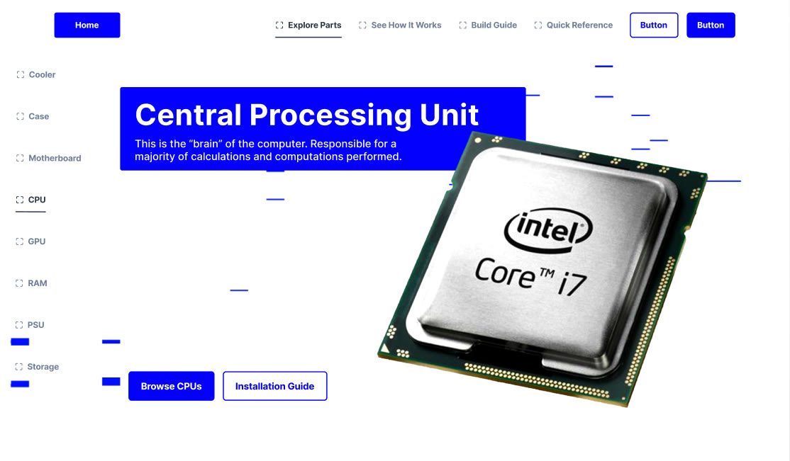
01
Initial concept
Hierarchy: labels and buttons outweighed the part itself, when the visuals should lead.
Complexity: too much information at once.
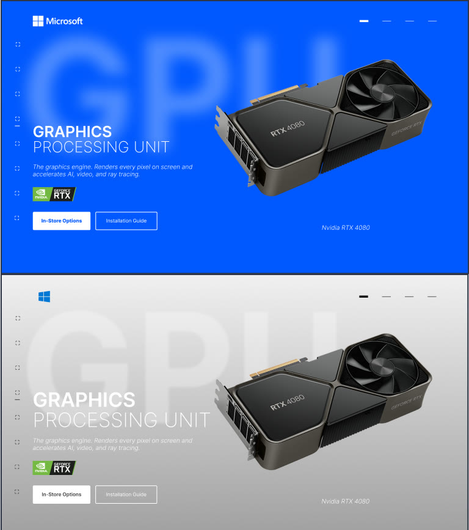
02
Second concept
Purpose: the branding and layout felt like a store selling a product rather than a place to learn.
Interaction: the UI was static and always on screen. It should appear when it's needed.
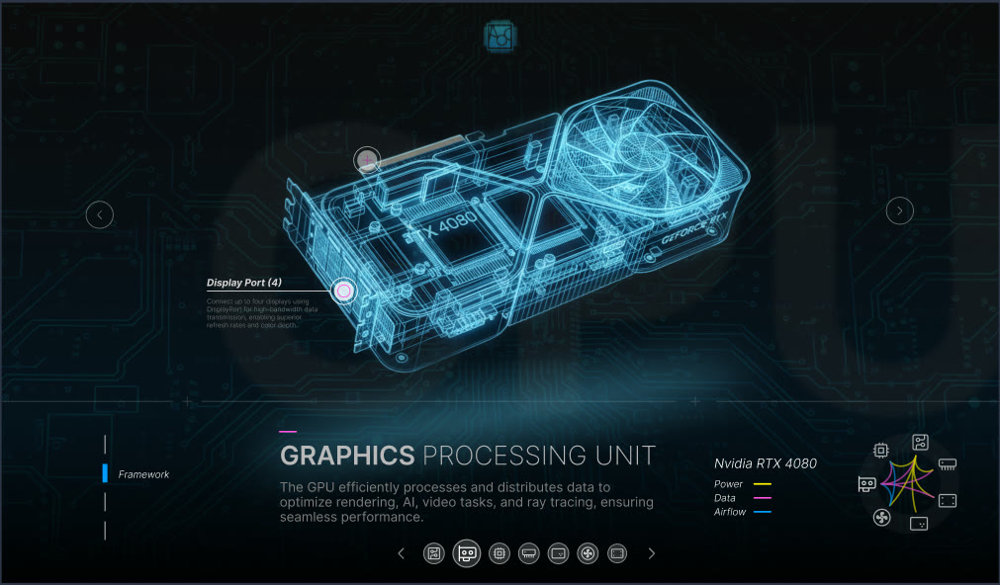
03
Third concept
Dark mode, holographic: it hit the project goals and the audience, but cost readability and accessibility.
UI: many controls invited exploration but could overwhelm a first-time visitor.
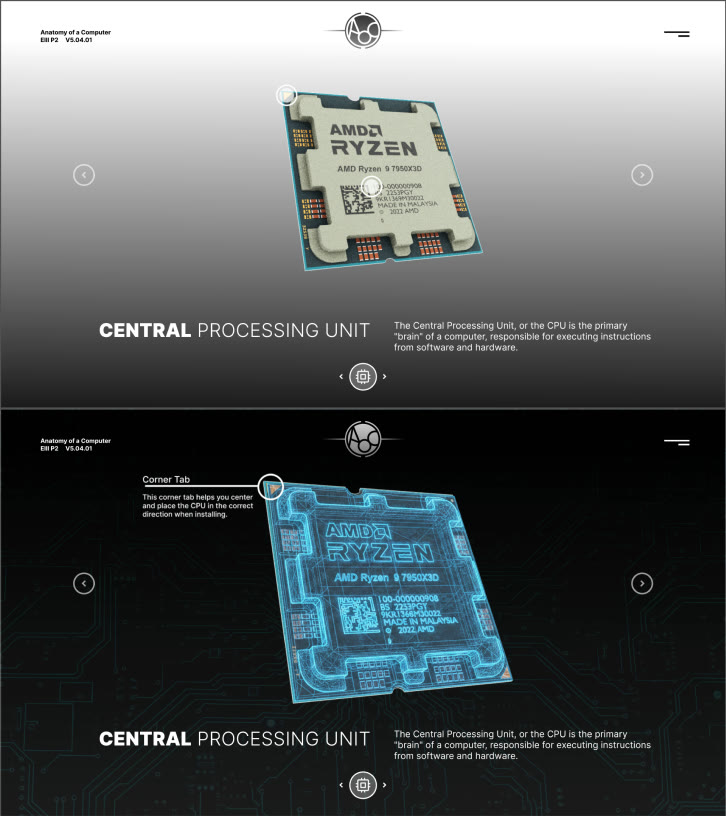
04
Final concept
Centred layout: the part sits in the middle, explored with directional controls.
Light / dark: the start screen is light so information is easy to take in; interacting with a part turns it into a dark holographic display.
Collapsible UI: layered, and opened only when needed.
07
Final Frames
Stills from the prototype film. Click any frame to see it larger.
Start screen
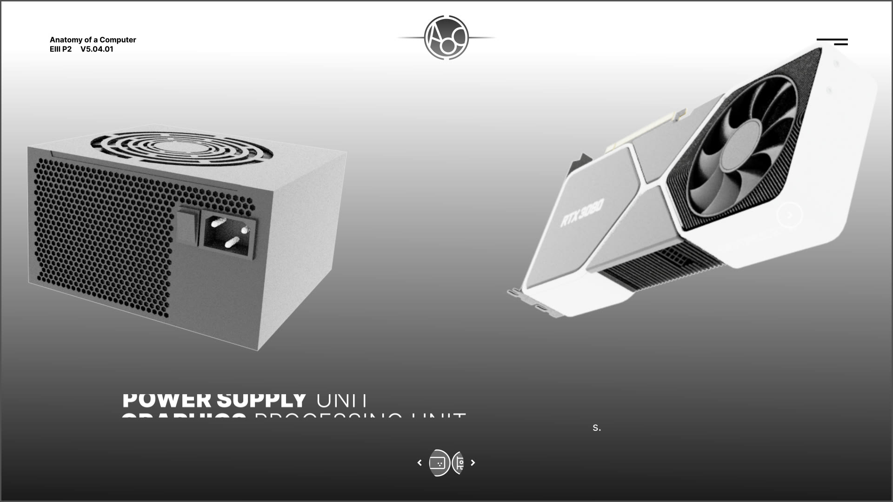
Power supply
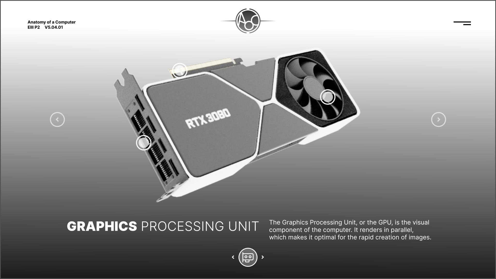
Graphics card
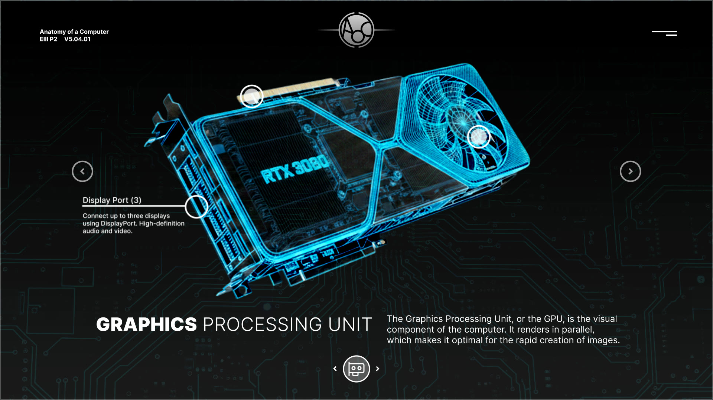
Hologram + tooltip
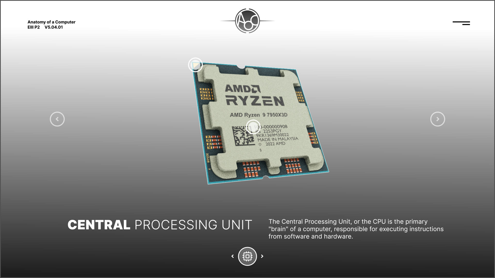
CPU
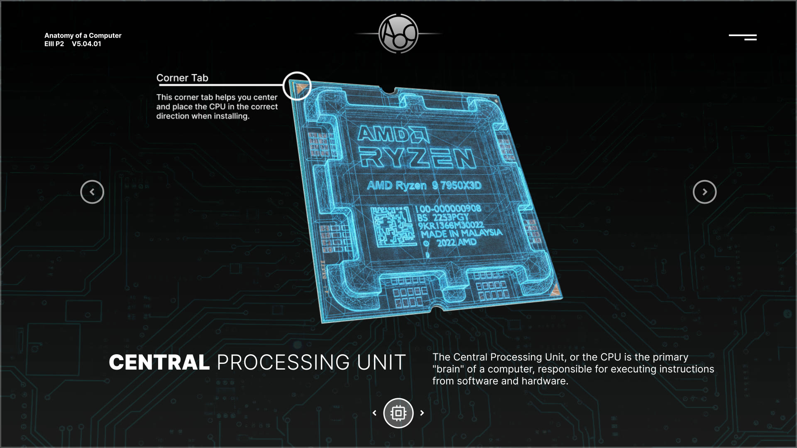
Corner tab
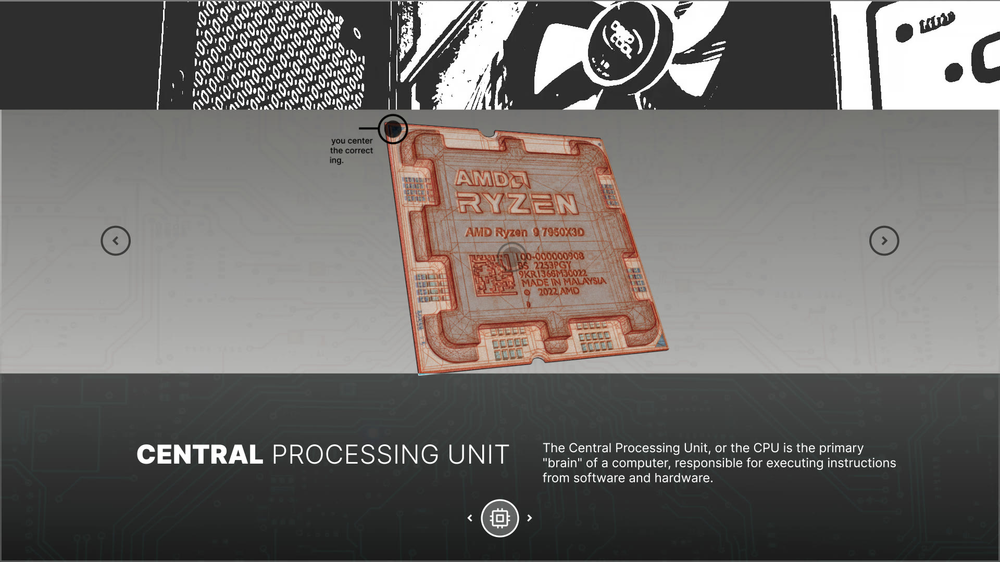
Transition
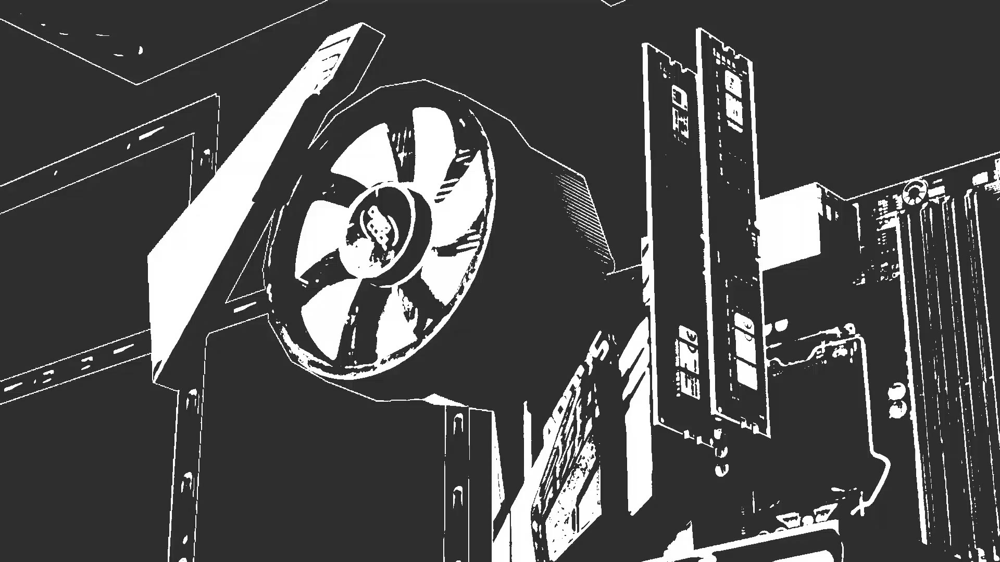
Inside the case
08
Scope
The prototype covers the part pages: the start screen, the power supply, graphics card and CPU, and the light-to-hologram interaction. The flow pages, build guide, compatibility check and quick reference in the sitemap are the planned rest of the system.